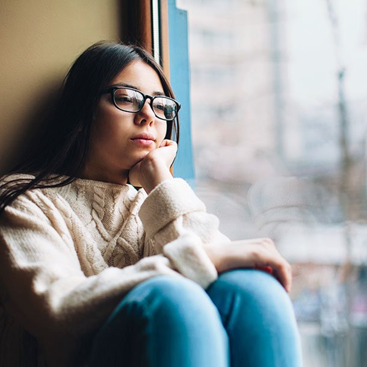

Don't Ignore the Harms of Social Distancing
MAY 02, 2020 -- While uncertainty prevails, I worry that hard questions are being avoided.I will strive not to be tone-deaf, but in the same way we discuss prognosis with patients with cancer or heart failure, we must also address difficult questions concerning the COVID-19 crisis.
The social distancing policies are harming people—not potential harms, but real harms.Economic harm is a euphemism because the economy is people.
I have had patients stop their medications because of job loss.When I state this publicly, some rebut it with the fact that US healthcare is unjust, which is true but also a non sequitur.We do not live in the healthcare system we want but the one we have.
A recent paper, in preprint form, suggests a substantial proportion of excess deaths observed in Scotland, the Netherlands, and New York during the current pandemic are not attributed to COVID-19 and may represent an excess of deaths due to other causes.
While the virus has been shown to harm minorities and the disadvantaged, it is also true that these same groups could be disproportionately harmed by our interventions.Shutting our clinics and reducing non-COVID care in hospitals threaten the poor more than the wealthy.Basic warfarin management in disadvantaged patients has been a huge challenge.
I don't have an easy answer for societal inequities, but it does public intellectuals no favors to ignore the fact that decision-makers have the luxury of a job and the ability to work from home.Our public interventions have made the poor even poorer.Raj Chetty and coworkers have shown that lower wealth strongly associates with a shorter lifespan.
Then there are the elderly.One of my colleagues suggested targeted strategies to protect older people.That sounds excellent.Put guards in nursing homes; allow older people no visitors.
Again, the reality is that you can isolate older people for a month or two, but are children and grandchildren going to avoid grandparents indefinitely?Is loneliness nothing?
What about the sole caregiver of a person with dementia?Before social distancing, they could get help from family or neighbors.Now the burden falls to one person.Unseen harm is still harm.A younger family member could infect an older person, but their absence could also be harmful.
My final but most important point is the timeline and endpoints for dealing with this virus.Take Sweden.Much has been said about their more moderate social distancing policies.Those who favor strong interventions point to the increasing COVID-19 death curve of Sweden relative to its Nordic neighbors.
The problem with such thinking is it belies both the timeline and endpoint of the COVID-19 intervention.The virus will not be eradicated (unless New Zealand wants to close its borders to all tourism for years).SARS-CoV2 will spread, and it will kill people.But so will our interventions.
Less restrictive policies combined with attentive public health surveillance do not equate to the idea of sacrificing the vulnerable.Rather, they attempt to balance the nondichotomous continuous nature of both COVID and non-COVID mortality.
COVID-19 is only one cause of death; there will be many more non-COVID deaths over the next 2 years.That is why the endpoint of this experiment is not this summer or next summer, but possibly the summer after that.And at that endpoint, we mustn't count only COVID-19 deaths but all deaths.
Conclusion
A decision to treat a medical illness comes with benefits and harms.When there is not a cure, and there rarely is, we consider outcomes of both the disease and the intervention.
Sometimes the best answer is no intervention, sometimes a moderate intervention, and occasionally, aggressive action is best.But whatever the choice, we cannot ignore the realities of the situation, however stark they may be.
Coronavirus is bad, but we can make it worse by avoiding candid discussion of the important questions.
John Mandrola practices cardiac electrophysiology in Louisville, Kentucky, and is a writer and podcaster for Medscape.He espouses a conservative approach to medical practice.He participates in clinical research and writes often about the state of medical evidence.
Posted On: 2021-05-12T00:00:00

Content Date: 2021-05-12
Download Date: 2021-05-13
Document ID: L0C04C0UZ